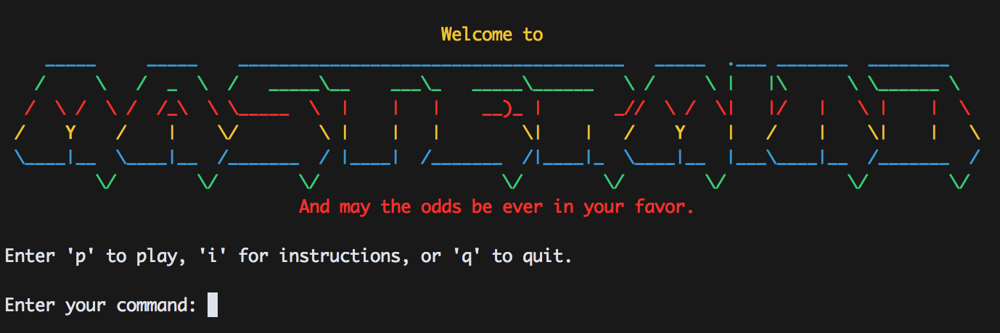

Mastermind
 This week was great. We had quite a bit of new things we learned with testing and REPLs which culminated with us completing the mastermind project. We built a command line version of the code breaking game. I loved this week! It was difficult but we actually had things we could see and show people what we have been learning. I had so much fun working on this project because it was the culmination of the knowledge we have acquired in the last 3 weeks and because there were things we could do to our projects to make them our own. I decided to add so cool ASCII art and colors. I also tried to insert some nerd jokes here and there. During this week we had our first interaction with pairing which I enjoed because it was a way we could fix some of our problems with another set of eyes. I'm looking forward to next week because people mentioned that it was going to be very hard but I really want to tackle this next project head on and really see what I have learned so far.